Other Locking Carabiners
Locking carabiners which do not fit in other categories.
| Image | Summary | ||||
|---|---|---|---|---|---|
| 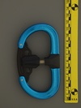 | AustriAlpin Fifty:Fifty | offset oval | full-auto | n/a | unique double-ended gate opening |
| 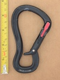 | Black Diamond GridLock Magnetron | hourglass | full-auto | simul-press | anti-crossloading belay carabiner paired with an inappropriate locking mechanism |
| 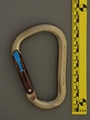 | Black Diamond RockLock Magnetron (no-usa) | HMS | full-auto | simul-press | magnetic simul-locking, symmetric locking system |
 | Black Diamond RockLock Magnetron (no-usa) (laser-mark) | HMS | full-auto | simul-press | magnetic simul-locking, symmetric locking system |
 | Black Diamond RockLock Magnetron (usa) | HMS | full-auto | simul-press | magnetic simul-locking, symmetric locking system |
| 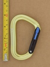 | Black Diamond VaporLock Magnetron (v1) | HMS | full-auto | simul-press | magnetic simul-locking, light HMS carabiner |
| 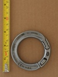 | Courant Odin | circle | manual | other stopped | omni-directional semi-permanent ring |
| 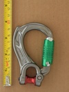 | DMM Director Yoke Locksafe Rope Spacer | asymmetric D | full-auto | twist-lift-twist | full featured quad-lock termination carabiner with interchangable eye and basket spur |
| 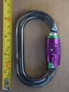 | DMM Ultra O Durolock | oval | full-auto | twist-lift-countertwist | dual-sleeve quad action |
| 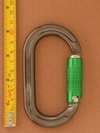 | DMM Ultra O Locksafe v1a | oval | full-auto | twist-lift-twist | single-sleeve quad action |
| 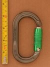 | DMM Ultra O Locksafe v1b | oval | full-auto | twist-lift-twist | twist-lift-twist-open quad action |
| 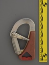 | Gibb Hook | asymmetric D | full-auto | pivot: lower | iconic boating carabiner for safety tethers |
| 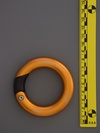 | Glacier Black O-Connect | circle | manual | machine screw | gated ring |
| 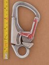 | ISC SH903 | asymmetric D | full-auto | press-and-press | early triple action carabiner snaphook - serious flaw |
| 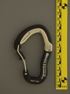 | KONG Ergo Wire Lock | S-spine | full-auto | pivot: lift | squeeze locking wiregate |
| 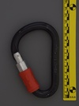 | KONG-BONAITI (HMS) (sliding screw lock) | HMS | full-auto | screw + slide (lift) | slide lock with additional screw lock |
| 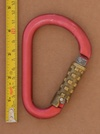 | Kong HMS 786 (VN) | HMS | full-auto | twist-lift-twist | quad lock, brass locking sleeve |
| 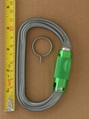 | Petzl Am'D Pin Lock | asymmetric D | full-auto | press-and-twist | requires tool to unlock |
| 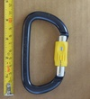 | Petzl Am'D Spinball | asymmetric D | assisted | press-and-twist | manual version of ball-lock |
| 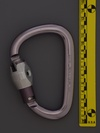 | Petzl William Ball Lock (metal sleeve v1) (aftermarket pinlock) | HMS | full-auto | press-and-twist | retrofit sleeve requires tool to unlock |
| 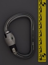 | Petzl William Ball Lock (metal sleeve v2) (aftermarket pinlock) | HMS | full-auto | press-and-twist | retrofit sleeve requires tool to unlock |
| 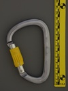 | Petzl William Spinball (flat hinge) | HMS | assisted | press-and-twist | manual version of ball-lock in HMS |
| 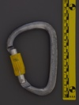 | Petzl William Spinball (rounded hinge) | HMS | assisted | press-and-twist | manual version of ball-lock in HMS |
| 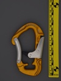 | Salewa (unknown) | other | full-auto | press | unique compound locking piece design |